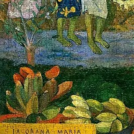
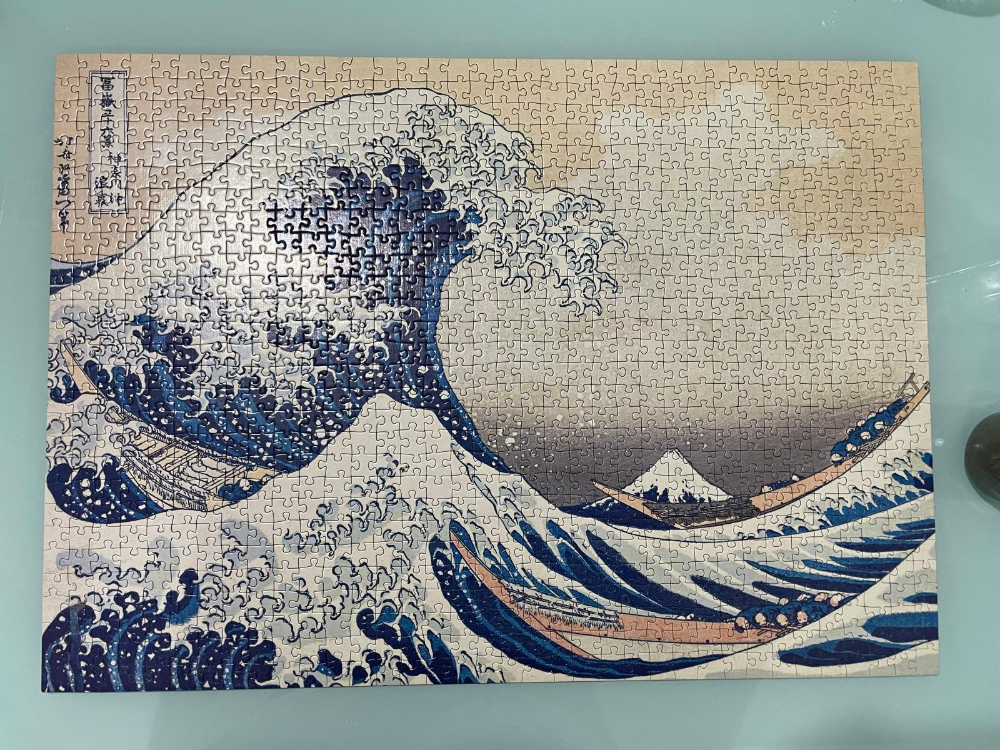
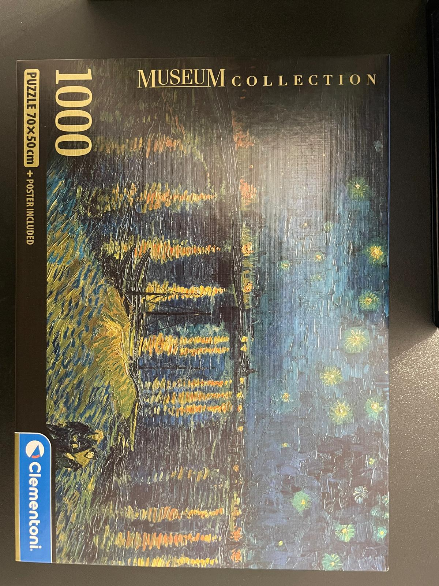

Le opere della collezione
Qui trovi una scheda per ogni quadro che ho ricomposto: chi lo ha dipinto, quando e in quale stile. Le foto sono dei miei puzzle completati.
Ia Orana Maria
Pittore: Paul Gauguin
Anno: 1891
Stile: post-impressionismo
Dove è esposto: Metropolitan Museum of Art, New York
Dipinto a Tahiti, unisce il tema cristiano dell'Ave Maria a un paesaggio tropicale con figure tahitiane. I colori caldi e saturi lo rendono un puzzle molto vivace.

_-_Google_Art_Project.jpg?width=500)
Il quadro originale (Wikimedia Commons, pubblico dominio).
La grande onda di Kanagawa
Artista: Katsushika Hokusai
Anno: circa 1830-1832
Stile: ukiyo-e (stampa giapponese su legno)
Serie: Trentasei vedute del monte Fuji
Un'enorme onda sta per abbattersi su tre barche, mentre sullo sfondo si vede il monte Fuji. Le linee nette e le zone di colore piatte rendono la ricomposizione precisa.


La stampa originale (Wikimedia Commons, pubblico dominio).
Notte stellata sul Rodano
Pittore: Vincent van Gogh
Anno: 1888
Stile: post-impressionismo
Dove è esposto: Musée d'Orsay, Parigi
Dipinta ad Arles, di notte, sulla riva del fiume. Le luci della città e le stelle si riflettono sull'acqua con pennellate lunghe e vibranti.


Il quadro originale (Wikimedia Commons, pubblico dominio).